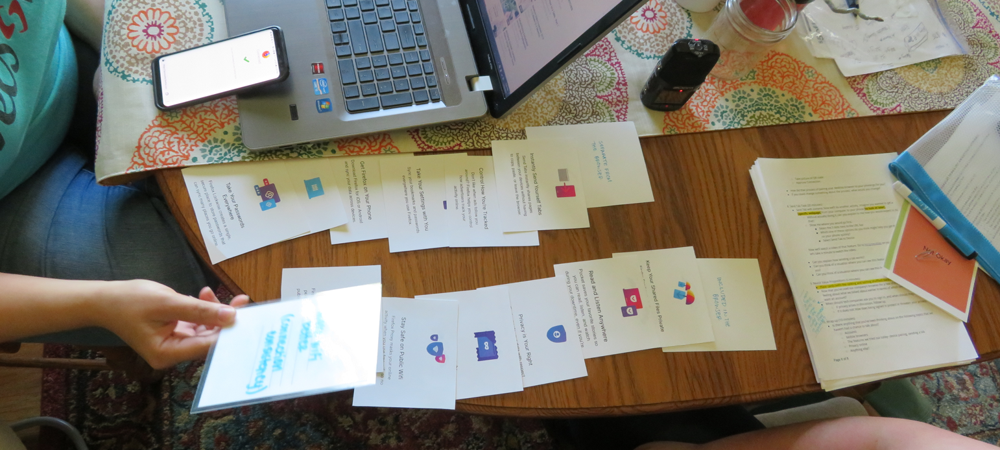
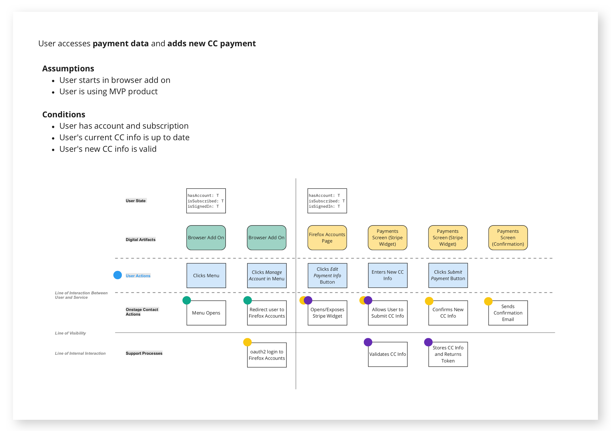

Mozilla’s first paid product billing and support platform
Overview
In order to continue driving Mozilla’s mission of internet safety, the company expanded its business model to provide premium security product offerings to its users. The Subscription Platform allowed for Mozilla to process customer payment, provide support, and facilitate communications with paying customers.
Role
Senior UX/UI Designer
Visual Designer
Team
I collaborated with product managers, developers, a UX designer, a UX researcher, and a content strategist.
Deliverables
User Research
Service Blueprints
Wireframes
Mockups & Prototypes
The Challenge
As a member of the team to develop Mozilla’s first paid product platform, I had to act as an advocate for the users while contributing to complicated cross-organizational collaboration, rapidly changing business needs, and the limitations of working within an existing accounts system.
The Solution
An intuitive platform that provides a seamless end-to-end customer experience, including billing, support, and email communication, that integrates with third party vendors and the existing Firefox Accounts UI.
Process
Research
I was part of a field research study where we conducted in-home user interviews and usability testing with participants in the Pacific Northwest. The goal for the interviews was to learn more about participants’ habits, their understanding of account ecosystems, and the paid services they’re interested in.

It was crucial for me to join the study as it helped reinforce several strategic decisions for the future of paid products. In addition to this research study, we leveraged several studies that were conducted by user researchers (before my time at Mozilla) that covered user expectations for billing and support.
Strategy
In order to provide a seamless end-to-end flow, it was important for us to go deeper than just user flows by mapping all of the planned integrations and when they are incorporated into the experience. I collaborated with another UX designer, a director of product, and a Firefox project manager to create service blueprints showing the user journey and the integrations with Stripe, Zendesk, and Salesforce Marketing Cloud. Below is one of the service blueprints (see more here).

These blueprints went through several rounds of iterations as I communicated with the developers to ensure we had planning alignment and clarity.
Ideation | Wireframes
Once the structure of the system and flows were in place, we moved on to wireframing. I split the wireframing work with one other UX designer; I lead the design of the update billing, support, and subscription termination flows. I focused specifically on:
• Leveraging Firefox Accounts’ existing design system where applicable to maintain a cohesive experience.
• Driving the application of accessibility best practices over some existing patterns when necessary.
• Creating designs that are responsive across devices and platforms.
Below is a sample of desktop wireframes showing the update billing, support, and termination flows.
I led the application of visual design to all of the wireframes and Salesforce Marketing Cloud emails. We started by consulting with the Brand Application and Firefox Accounts teams to ensure our plans were in alignment with established conventions.
The visual design is modern, clean, and straightforward, reserving bright colors for actionable steps. I provided flow prototypes via Invision and pixel-perfect mockups via Zeplin to the front end developers, working closely with them on implementation. Below, you can view the prototype for the update billing and support flows.
I also created all of the mobile mockups, a sample of the onboarding flow can be seen below:
For the MVP launch, we followed the existing Firefox Accounts layout and structure. However, it became apparent that over time this would not be a scalable solution. I persuaded management to allocate resources to redesign the Firefox Accounts experience to better prioritize the Subscription Platform in the hierarchy. I acted as a key stakeholder and efforts are currently underway.
Iteration & Testing
Usability testing was conducted by a user researcher on the MVP experience and the results validated the designs and flows we developed.
“I love that you don't have to call, you can just go in and do it… I like how user friendly the entire process is.” (Usability Testing Participant)
The MVP was launched in December 2019 and is currently live. Since the MVP supports a single product, single billing method, and launched to users in the US, we also started work on developing flows and mockups for several potential future scenarios in order to prepare for the scaling of the platform (designs currently NDA).
Results
The launch of the Subscription Platform and paid products at Mozilla was an exciting one. We are currently successfully processing payments that allow our users to engage with more products that will help them stay safe and secure on the internet.
As for my role, this was by far the largest team I’ve worked on and it was a great opportunity to be a key player in building relationships across orgs at Mozilla. I was an advocate for our users throughout the project, keeping decision making grounded in user needs even during times of rapid change or uncertainty. The outcome was a seamless end-to-end experience that will continue to scale well as we build out the platform.